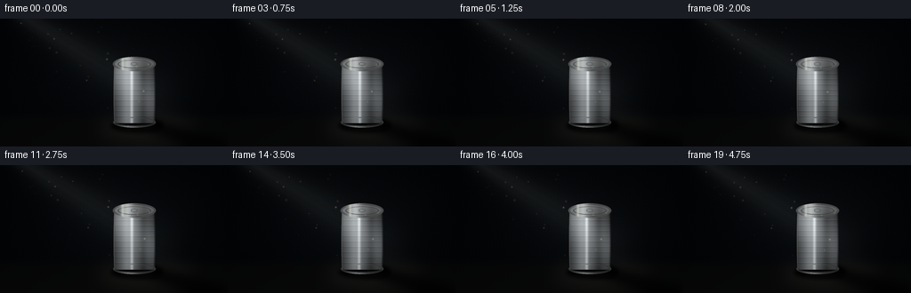
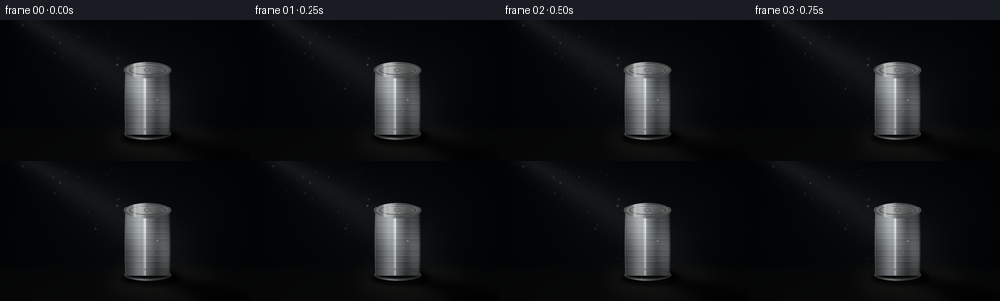

CODING AGENTS AS PIXEL WORLD MODELS
traex/GPT-5.6-Sol · phygen_042
点击播放 · 原生 RGB 像素
逐轮保存的候选
回放视频、检查图与代码变化。
每份候选均可单独播放。实际图片检查记录在下方工具轨迹中。
候选 01播放与检查图
点击播放 · 原生 RGB 像素


展开代码变化
--- 上一保存版本
+++ 本次保存版本
@@ -0,0 +1,224 @@
+"""Procedurally render a dark studio shot of a tin can in a diagonal light ray."""
+
+from pathlib import Path
+import json
+
+import numpy as np
+from PIL import Image, ImageDraw, ImageFilter
+
+import artifact_io
+
+
+ROOT = Path(__file__).resolve().parent
+SPEC = json.loads((ROOT / "task_spec.json").read_text())
+W, H = SPEC["width"], SPEC["height"]
+N = SPEC["frames"]
+S = 4 # supersampling for smooth silhouette and light falloff
+WW, HH = W * S, H * S
+
+yy, xx = np.mgrid[0:HH, 0:WW].astype(np.float32)
+x = xx / S
+y = yy / S
+
+
+def blurred_shape(draw_fn, radius):
+ """Return a float mask made with Pillow drawing commands at render resolution."""
+ im = Image.new("L", (WW, HH), 0)
+ d = ImageDraw.Draw(im)
+ draw_fn(d)
+ if radius:
+ im = im.filter(ImageFilter.GaussianBlur(radius * S))
+ return np.asarray(im, dtype=np.float32) / 255.0
+
+
+def ellipse_mask(box, blur=0):
+ b = tuple(int(v * S) for v in box)
+ return blurred_shape(lambda d: d.ellipse(b, fill=255), blur)
+
+
+def poly_mask(points, blur=0):
+ pts = [(int(a * S), int(b * S)) for a, b in points]
+ return blurred_shape(lambda d: d.polygon(pts, fill=255), blur)
+
+
+def over(im, color, alpha):
+ """Alpha composite a solid/array RGB color over a float RGB image."""
+ a = np.clip(alpha, 0, 1)[..., None]
+ return im * (1.0 - a) + np.asarray(color, np.float32) * a
+
+
+# Fixed dust layout. The tiny particles move coherently, rather than sparkling randomly.
+rng = np.random.default_rng(42017)
+dust_x = rng.uniform(17, 170, 34)
+dust_y = rng.uniform(4, 103, 34)
+dust_r = rng.uniform(.18, .62, 34)
+dust_a = rng.uniform(.12, .42, 34)
+dust_phase = rng.uniform(0, 2 * np.pi, 34)
+
+
+def render(frame_index):
+ phase = 2 * np.pi * frame_index / N
+
+ # A nearly black, cool studio wall. Fine deterministic texture prevents flat CGI black.
+ vignette = np.sqrt(((x - 132) / 170) ** 2 + ((y - 72) / 112) ** 2)
+ grain = (np.sin(x * 1.71 + y * .29) + np.sin(y * 2.31 - x * .18)) * .34
+ wall_lift = 3.4 * np.exp(-((x - 132) ** 2 / 15000 + (y - 66) ** 2 / 6000))
+ base = np.zeros((HH, WW, 3), np.float32)
+ base[..., 0] = 3.1 + wall_lift * .54 - 2.0 * vignette + grain
+ base[..., 1] = 5.1 + wall_lift * .65 - 2.0 * vignette + grain
+ base[..., 2] = 7.0 + wall_lift * .80 - 1.8 * vignette + grain * .8
+ im = np.clip(base, 0, 255)
+
+ # Floor is just visible at the foot of the can, with no distracting hard horizon.
+ floor_alpha = np.clip((y - 105.0) / 9.0, 0, 1) * .78
+ floor_col = np.empty_like(im)
+ floor_col[..., 0] = 7.0 + (y - 105) * .075
+ floor_col[..., 1] = 7.2 + (y - 105) * .068
+ floor_col[..., 2] = 7.1 + (y - 105) * .052
+ im = im * (1 - floor_alpha[..., None]) + floor_col * floor_alpha[..., None]
+
+ # Volumetric spotlight: source beyond upper-left, widening toward the can.
+ # A sub-pixel drift and gentle intensity breathing give the shot natural motion.
+ sx, sy = 11.0, -12.0
+ target_x = 150.0 + .75 * np.sin(phase)
+ target_y = 75.0 + .45 * np.cos(phase * .7)
+ dx, dy = target_x - sx, target_y - sy
+ length = np.hypot(dx, dy)
+ ux, uy = dx / length, dy / length
+ along = (x - sx) * ux + (y - sy) * uy
+ cross = -(x - sx) * uy + (y - sy) * ux
+ halfwidth = 5.5 + np.maximum(along, 0) * .105
+ core = np.exp(-.5 * (cross / (halfwidth * .62 + 1)) ** 2)
+ soft = np.exp(-.5 * (cross / (halfwidth * 1.50 + 2)) ** 2)
+ start_end = 1 / (1 + np.exp(-(along - 3) / 4))
+ start_end *= 1 / (1 + np.exp((along - 211) / 10))
+ # Slight streak structure inside the ray, fixed in space and therefore cinematic.
+ streak = .90 + .10 * np.sin(cross * .42 + 1.2) ** 2
+ breathe = .97 + .025 * np.sin(phase + .4)
+ beam = start_end * breathe * (.047 * soft + .105 * core * streak)
+ beam *= np.clip(1 - (y / 190), .35, 1)
+ im = over(im, np.array([151, 158, 153], np.float32), beam)
+
+ # Dim pool where the ray meets the floor.
+ pool = ellipse_mask((111, 108, 218, 139), 9)
+ pool *= .11 * breathe
+ im = over(im, [132, 128, 112], pool)
+
+ # Long cast shadow falls away from the light, clearly visible at the bottom.
+ cast = poly_mask([(128, 113), (169, 113), (254, 136), (255, 144), (211, 144)], 4.5)
+ cast += ellipse_mask((129, 111, 181, 128), 3.0) * .78
+ cast = np.clip(cast, 0, 1)
+ im = over(im, [0.6, .8, 1.0], cast * .76)
+ contact = ellipse_mask((124, 113, 183, 128), 2.0)
+ im = over(im, [0, 0, 0], contact * .78)
+
+ # A faint, soft metallic reflection directly beneath the cylinder.
+ reflection = ellipse_mask((136, 117, 173, 136), 4)
+ reflection *= np.clip((137 - y) / 20, 0, 1) * .09
+ im = over(im, [92, 91, 82], reflection)
+
+ # Can body silhouette: a mildly barrel-shaped cylinder.
+ cx = 151.0
+ yn = np.clip((y - 52.5) / 65.0, 0, 1)
+ width = 23.1 + .62 * np.sin(np.pi * yn)
+ body = ((y >= 51.5) & (y <= 117.5) & (np.abs(x - cx) <= width)).astype(np.float32)
+ xn = (x - cx) / np.maximum(width, 1)
+
+ # Cylindrical metallic response with broad and razor-thin reflected highlights.
+ curvature = np.sqrt(np.clip(1 - xn * xn, 0, 1))
+ left_key = np.clip(.85 - .44 * xn, .15, 1.35)
+ broad_glint = np.exp(-.5 * ((x - (143.6 + .35 * np.sin(phase))) / 5.4) ** 2)
+ sharp_glint = np.exp(-.5 * ((x - (148.0 + .65 * np.sin(phase * .85))) / 1.20) ** 2)
+ dark_reflection = np.exp(-.5 * ((x - 160.7) / 3.2) ** 2)
+ vertical = .93 - .13 * yn + .06 * np.cos((y - 54) * .105)
+ lum = (24 + 52 * curvature * left_key + 48 * broad_glint + 72 * sharp_glint
+ - 25 * dark_reflection) * vertical
+
+ # Light-ray impact is visible as a diagonal warm band crossing the metal.
+ beam_on_can = np.exp(-.5 * (cross / 17.0) ** 2) * np.clip((along - 100) / 35, 0, 1)
+ lum += 52 * beam_on_can
+ metal = np.stack([lum * 1.01 + 7, lum * 1.035 + 8, lum * 1.045 + 9], axis=-1)
+
+ # Horizontal corrugations catch a bright upper edge and a dark lower edge.
+ ribs = np.zeros((HH, WW), np.float32)
+ for ry in (62, 68, 74, 80, 86, 92, 98, 104, 110):
+ ribs += 10.5 * np.exp(-.5 * ((y - (ry - .48)) / .38) ** 2)
+ ribs -= 13.0 * np.exp(-.5 * ((y - (ry + .55)) / .48) ** 2)
+ # Ribs fade at the strongly curved sides, as real reflections do.
+ metal += (ribs * (.45 + .55 * curvature))[..., None]
+
+ # Dark silhouette edge and a hairline key-light edge on the left.
+ edge_dark = np.clip((np.abs(x - cx) - width + 2.2) / 2.2, 0, 1)
+ metal *= (1 - .64 * edge_dark[..., None])
+ left_edge = np.exp(-.5 * ((x - (cx - width + .7)) / .48) ** 2)
+ metal += (left_edge * 48)[..., None]
+ im = im * (1 - body[..., None]) + np.clip(metal, 0, 235) * body[..., None]
+
+ # Bottom rolled seam, partly swallowed by the contact shadow.
+ bottom_outer = ellipse_mask((127.0, 110.8, 175.0, 122.5), .18)
+ bottom_inner = ellipse_mask((129.0, 112.0, 173.0, 120.2), .15)
+ bottom_ring = np.clip(bottom_outer - bottom_inner, 0, 1)
+ ring_lum = 54 + 72 * np.exp(-.5 * ((x - 144.5) / 7) ** 2)
+ ring_rgb = np.stack([ring_lum, ring_lum * 1.02, ring_lum * 1.02], -1)
+ im = im * (1 - bottom_ring[..., None]) + ring_rgb * bottom_ring[..., None]
+ bottom_line = ellipse_mask((129, 115.0, 173, 121.0), .25) - ellipse_mask((130, 114.6, 172, 119.4), .2)
+ im = over(im, [17, 18, 18], np.clip(bottom_line, 0, 1) * .65)
+
+ # Top lid and its double rolled rim. It sits over the body and establishes the can.
+ top_outer = ellipse_mask((126.8, 43.0, 175.2, 59.2), .12)
+ top_inner = ellipse_mask((129.2, 45.0, 172.8, 56.9), .10)
+ tx = (x - cx) / 24.2
+ ty = (y - 51.0) / 8.1
+ lid_lum = (57 + 54 * np.clip(1 - tx * .38 - ty * .20, 0, 1)
+ + 70 * np.exp(-.5 * ((x - 143.0) / 4.4) ** 2)
+ - 19 * np.exp(-.5 * ((x - 162) / 4.0) ** 2))
+ lid = np.stack([lid_lum * 1.01, lid_lum * 1.035, lid_lum * 1.04], -1)
+ im = im * (1 - top_outer[..., None]) + np.clip(lid, 0, 235) * top_outer[..., None]
+ outer_ring = np.clip(top_outer - top_inner, 0, 1)
+ rim_lum = 73 + 105 * np.exp(-.5 * ((x - 142) / 5.4) ** 2)
+ rim = np.stack([rim_lum, rim_lum * 1.02, rim_lum * 1.02], -1)
+ im = im * (1 - outer_ring[..., None]) + rim * outer_ring[..., None]
+
+ # Embossed circular lid groove and a small stamped center indentation.
+ groove_outer = ellipse_mask((132.3, 46.5, 169.7, 55.8), .08)
+ groove_inner = ellipse_mask((133.3, 47.1, 168.7, 55.0), .08)
+ groove = np.clip(groove_outer - groove_inner, 0, 1)
+ im = over(im, [48, 51, 52], groove * .66)
+ center_stamp = ellipse_mask((147.0, 49.2, 154.7, 52.9), .12)
+ center_stamp_in = ellipse_mask((148.0, 49.7, 153.8, 52.25), .12)
+ im = over(im, [48, 50, 50], np.clip(center_stamp - center_stamp_in, 0, 1) * .48)
+
+ # A narrow reflected ray traces down the left rim, tying light to object.
+ rim_spark = top_outer * np.exp(-.5 * ((x - (137.8 + .25*np.sin(phase))) / 1.1) ** 2)
+ im = over(im, [225, 228, 213], rim_spark * .52)
+
+ # Suspended dust in front of the scene, only visible while inside the shaft.
+ dust_layer = np.zeros((HH, WW), np.float32)
+ travel = frame_index / max(N - 1, 1)
+ for px, py, pr, pa, pp in zip(dust_x, dust_y, dust_r, dust_a, dust_phase):
+ qx = px + travel * (2.4 + 1.2 * np.sin(pp)) + .45 * np.sin(phase + pp)
+ qy = py + travel * (1.9 + .7 * np.cos(pp))
+ # Analytic beam membership at the particle center.
+ aa = (qx - sx) * ux + (qy - sy) * uy
+ cc = -(qx - sx) * uy + (qy - sy) * ux
+ hw = 5.5 + max(aa, 0) * .105
+ visibility = np.exp(-.5 * (cc / (hw * 1.15 + 1)) ** 2)
+ if 0 < aa < 205 and visibility > .08:
+ dust_layer += pa * visibility * np.exp(-((x-qx)**2 + (y-qy)**2) / (2*(pr+.16)**2))
+ im = over(im, [219, 220, 197], np.clip(dust_layer, 0, .55))
+
+ # Final optical vignette and very mild display gamma.
+ final_vig = np.clip(1 - .27 * (((x - W/2)/(W*.72))**2 + ((y-H/2)/(H*.82))**2), .62, 1)
+ im *= final_vig[..., None]
+ im = np.clip(im, 0, 255).astype(np.uint8)
+ # LANCZOS downsampling integrates supersampled geometry and dust.
+ return np.asarray(Image.fromarray(im, "RGB").resize((W, H), Image.Resampling.LANCZOS))
+
+
+def main():
+ frames = np.stack([render(i) for i in range(N)], axis=0).astype(np.uint8)
+ artifact_io.save(frames, ROOT)
+
+
+if __name__ == "__main__":
+ main()
可观测工具轨迹
实际执行的命令与返回图片。
命令 1exit 0
/bin/bash -lc "cat prompt.txt && printf '\\n---RULES---\\n' && cat GENERATION_RULES.md && printf '\\n---SPEC---\\n' && cat task_spec.json"
命令 2exit 0
/bin/bash -lc "find . -maxdepth 2 -type f -printf '%p %s bytes\\n' | sort && printf '\\nTools:\\n' && command -v blender || true; command -v ffmpeg || true; command -v python3 || true"
命令 3exit 0
/bin/bash -lc "sed -n '1,240p' artifact_io.py"
命令 4exit 0
/bin/bash -lc "python3 - <<'PY'
try:
import PIL; print('PIL',PIL.__version__)
except Exception as e: print(e)
try:
import numpy; print('numpy',numpy.__version__)
except Exception as e: print(e)
try:
import scipy; print('scipy',scipy.__version__)
except Exception as e: print(e)
PY"命令 5exit 0
/bin/bash -lc 'python3 generate.py'
命令 6exit 0
/bin/bash -lc "python3 - <<'PY'
import numpy as np
from PIL import Image
p=np.load('pixels.npz')['pixels']
print('packed',p.shape,p.dtype)
ims=np.stack([np.asarray(Image.open(f'frames/{i:02d}.png')) for i in range(20)])
print('frames',ims.shape,ims.dtype,'range',ims.min(),ims.max(),'mean',ims.mean())
print('temporal MAE consecutive',np.abs(np.diff(ims.astype(float),axis=0)).mean(axis=(1,2,3)).round(3))
# meaningful luminance regions: background, can, lower shadow
lum=ims.mean(-1)
for name,sl in [('background',(slice(None),slice(10,40),slice(190,240))),('beam',(slice(None),slice(20,55),slice(45,105))),('can',(slice(None),slice(45,119),slice(126,176))),('floor',(slice(None),slice(120,140),slice(20,240))),('shadow',(slice(None),slice(122,141),slice(180,250)))]:
print(name, round(float(lum[sl].mean()),2), round(float(lum[sl].max()),2))
PY
ls -lh pixels.npz inspection.png transition_check.png index.html frames/00.png"命令 7exit 0
/bin/bash -lc 'python3 -m py_compile generate.py artifact_io.py && git status --short 2>/dev/null || true'
命令 8exit 0
/bin/bash -lc "python3 - <<'PY'
from PIL import Image
import numpy as np
im=np.asarray(Image.open('frames/10.png').convert('L').resize((64,36)))
chars=' .:-=+*#%@'
# nonlinear brighten ASCII only
z=np.sqrt(im/255)
for row in z: print(''.join(chars[min(9,int(v*10))] for v in row))
PY"保存候选 1 份；完成命令 8 次；可验证图片返回 0 张。原始 API 响应与完整日志保留在本地。